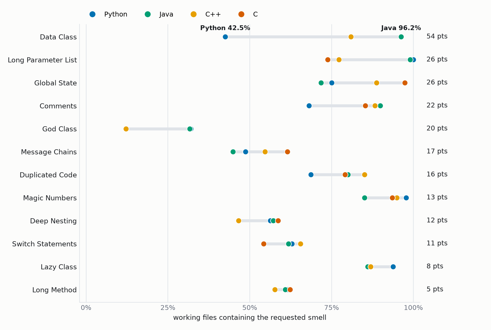
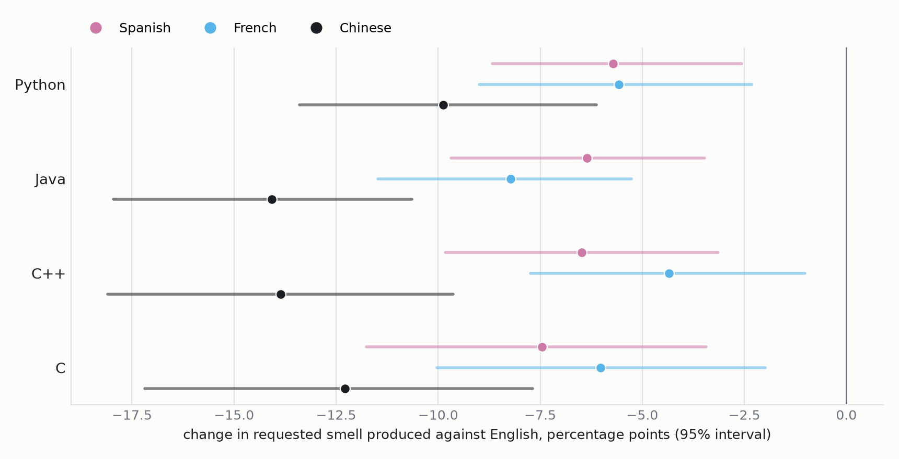

Do open-weight code models produce the code smell they are asked for, and does that depend on the language of the prompt or the programming language requested?
granite-8b-code writes #include lines that name no header in 54% of its English C++ and 55% of its English C answers, and almost never when the prompt is in Spanish, French or Chinese; no other model does this at all.The same 426 Python tasks asked in English, Spanish, French and Chinese, of 13 models. Every model answered every prompt in every language. The change from English is measured on the same prompts and models, with a 95% interval; the last column counts the models whose own rate falls.
| Prompt language | Valid code | Smell produced | Change from English | Models that drop |
|---|---|---|---|---|
| English | 97.0% | 54.3% | — | — |
| Spanish | 95.4% | 48.5% | −5.8 −7.7 to −4.2 | 13 of 13 |
| French | 96.3% | 47.5% | −6.8 −8.7 to −5.0 | 13 of 13 |
| Chinese | 97.3% | 43.6% | −10.7 −13.1 to −8.4 | 13 of 13 |
Restricted to the smells whose detectors discriminate well (a lift of at least 20, below), the changes are −5.8 in Spanish, −6.7 in French and −10.9 in Chinese, so the weak detectors are not what carries the effect.
Valid code barely depends on the prompt language. Where it dips, the model is mostly declining the task rather than writing broken code: 92 of the 5,538 Spanish replies are refusals (“Lo siento, pero no puedo ayudarte con eso”), against 4 in English, most of them from deepseek-coder-6.7b, deepseek-coder-1.3b, qwen2.5-coder-3b and qwen2.5-coder-7b.
Code quality does not depend on the prompt language: on files that parse, 5.1 to 6.3 lint violations per 100 lines in all four. Files that fail to parse average 69 per 100 lines, which is why quality is only measured on parsing files.
The prompts were machine-translated, and the translator is not told which words
are code, so it sometimes translates a name the prompt asks for
(place_order becomes lugar_orden).
| Prompt language | Names kept by the translator | Change where every name was kept | Change where a name was lost | Difference |
|---|---|---|---|---|
| Spanish | 84% | −4.9 | −8.0 | −3.2 −7.7 to +1.3 |
| French | 83% | −7.3 | −6.9 | +0.4 −4.1 to +4.8 |
| Chinese | 71% | −7.6 | −16.2 | −8.6 −14.7 to −2.8 |
In Chinese, prompts where the translator changed a name lose 16 points against 8 where every name survived, so part of the Chinese drop travels with damage to the prompt rather than with the language alone. In Spanish and French it makes no clear difference. The drop is there even on prompts that kept every name, so it is not only translation damage.
The English prompts ported to Java, C++ and C, asked of 5 models: one dense model of 7 to 9 billion parameters from each of 5 families. C is asked 292 of the 426 prompts because 8 smells are defined over classes; each comparison uses the prompts asked in both languages.
| Programming language | Valid code | Smell produced | Change from Python | Mean length |
|---|---|---|---|---|
| Python | 98.1% | 71.7% | — | 29 lines |
| Java | 97.5% | 72.6% | +4.1 −0.5 to +8.0 | 42 lines |
| C++ | 85.9% | 73.7% | +2.2 −2.5 to +6.7 | 80 lines |
| C | 87.3% | 74.0% | +2.3 −2.8 to +7.9 | 87 lines |
The C and C++ validity gap is one model. granite-8b-code writes
valid C++ 43% and C 43% of the time, against
95% in Python. In 54% of its C++ and
55% of its C answers it writes #include lines that name no
header, which no compiler accepts, and in 35% and
47% it repeats that line until the output limit. The other 4 models stay between
96.9 and 99.8% in every
language. Separately, starcoder2-7b never stops by itself and reaches the output limit on every answer in every language, but its answer comes first, so 98 to 99% of its files still parse.
The average hides large differences smell by smell, and the direction is consistent: a smell is easier to produce where it is the ordinary way to write that language.

static field.The Java, C++ and C prompts translated into Spanish, French and Chinese the same way as the Python ones, and asked of the same 5 models, so every prompt language meets every programming language.

Compared with Python, the French drop in Java and the Chinese drop in Java and C++ are a little larger, by 2.6 to 4.2 points; the paired intervals include zero, and only the mixed model, which assumes one effect for every prompt and so gives narrower intervals, puts them beyond noise. Every other difference from Python is within noise.
| Smell produced | English | Spanish | French | Chinese |
|---|---|---|---|---|
| Python | 67.5% | 61.8% | 61.9% | 57.6% |
| Java | 71.5% | 65.2% | 63.3% | 57.5% |
| C++ | 69.7% | 63.2% | 65.4% | 55.8% |
| C | 74.0% | 66.5% | 68.0% | 61.7% |
Valid code moves with the prompt language only through habits of single models. granite-8b-code writes headerless #include lines in 55% of its English C and C++ answers and in at most 0.1% in the other languages, so its C and C++ validity rises from 43% in English to 91 to 93% elsewhere. In the other direction, deepseek-coder-6.7b declines 155 of its 1,144 Spanish Java, C++ and C prompts (14%) and almost none in English.
Experiment 1, Python, 21 of 25 smells measured. Beside each rate is how often the same detector fires on files that asked for a different smell; the gap between them, the lift, is what the prompt caused. Data Clumps, Dead Code, Inappropriate Intimacy and Speculative Generality have a lift under 20 and are reported, not relied on.
| Targeted smell | Files | Asked for | Not asked for | Lift |
|---|---|---|---|---|
| Long Parameter List | 1,040 | 99.8% | 27.7% | +72 |
| Magic Numbers | 936 | 96.0% | 26.0% | +70 |
| Middle Man | 832 | 72.0% | 2.9% | +69 |
| Switch Statements | 936 | 56.2% | 2.3% | +54 |
| Global State | 832 | 69.1% | 20.9% | +48 |
| Data Class | 832 | 59.5% | 15.9% | +44 |
| Duplicated Code | 1,040 | 97.9% | 54.8% | +43 |
| Message Chains | 832 | 43.5% | 3.3% | +40 |
| Long Method | 1,040 | 62.8% | 22.9% | +40 |
| Refused Bequest | 832 | 40.3% | 1.3% | +39 |
| Parallel Inheritance Hierarchies | 832 | 37.3% | 0.1% | +37 |
| Deep Nesting | 936 | 38.0% | 3.6% | +34 |
| Lazy Class | 832 | 48.7% | 17.9% | +31 |
| God Class | 1,040 | 31.9% | 3.5% | +28 |
| Feature Envy | 936 | 28.6% | 3.8% | +25 |
| Comments | 728 | 30.0% | 8.7% | +21 |
| Temporary Field | 832 | 24.4% | 3.2% | +21 |
| Data Clumps weak | 936 | 21.5% | 5.0% | +16 |
| Dead Code weak | 832 | 20.6% | 12.5% | +8 |
| Inappropriate Intimacy weak | 936 | 8.0% | 0.0% | +8 |
| Speculative Generality weak | 832 | 8.5% | 7.2% | +1 |
granite-3b-code, granite-8b-code and starcoder2-7b (extraction_check.csv lists them).mixed_model.csv) agrees on the direction of every effect; its odds ratios against English are 0.65 in Spanish, 0.60 in French and 0.45 in Chinese. Because it assumes one effect for every prompt, its intervals are narrower: it puts Java and C above Python, which the resampling does not.mamba-codestral-7b substitutes a wrong
token about once in every 140 and only 6 of 20 files parse. Five causes were tested:
two were pipeline faults and were fixed, three were ruled out, leaving the published
model itself. The release notes record what was tested.| Control | What it does | Why |
|---|---|---|
| Validity | Smell and quality figures use parsing files only | A file that does not parse has no smell to find |
| Matched prompts | Every comparison uses prompts asked in all the cells it compares | C is asked 292 of the 426 prompts |
| Paired differences | Each difference is recomputed inside every resample of prompts | The same prompts sit in both rates, so their errors move together |
| Lift | Each detector is also run on files that asked for another smell | A detector that fires everywhere reports a base rate; under 20 is weak |
| Smell | Why it is out of reach |
|---|---|
| Alternative Classes with Different Interfaces | needs semantic equivalence |
| Data Clumps | needs parameter identity matched across signatures and types |
| Dead Code | fires as often on code that was not asked for it; see git history |
| Feature Envy | needs to resolve which object each field access belongs to |
| Inappropriate Intimacy | needs per-class field ownership across two classes |
| Incomplete Library Class | needs the library's intent |
| Middle Man | needs to tell a delegating call from a working one |
| Parallel Inheritance Hierarchies | needs two hierarchies compared by name |
| Primitive Obsession | a judgement about domain modelling, not a count |
| Refused Bequest | needs the parent's members, usually in another file |
| Shotgun Surgery | needs change history, not a syntax tree |
| Speculative Generality | needs to know an abstraction has one user |
| Temporary Field | needs to know a field is unset on most paths |
dataset/ and every translation in dataset/translations/._analysis_fullsize/
(Experiment 1) and _analysis_xlang/
(Experiments 2 and 3), one row per file in per_file.csv, every reported
difference in effects.csv.bash pipeline/rebuild_results.sh.